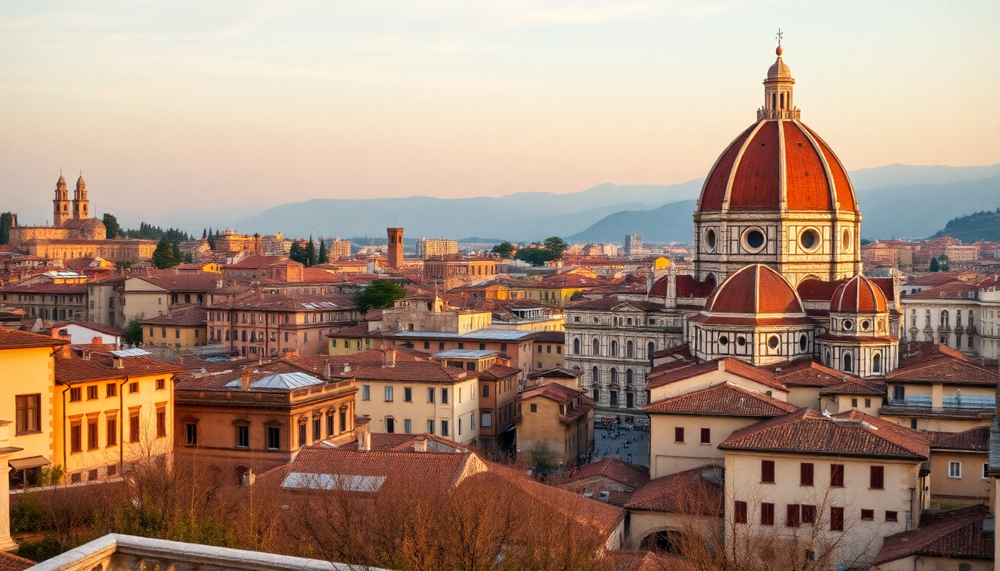

10 Day Italy Itinerary: Rome, Florence, Venice & More

I just got back from this exact loop, and here’s what I wish someone had told me: you can do Rome, Florence, Venice, and Cinque Terre in 10 days without feeling like you’re racing between train stations. The secret is cutting the fluff—skip the long museum queues, eat where locals eat, and pick one base in Cinque Terre. This itinerary is what actually worked for me, with real train times and honest opinions on where to spend your money.
Is 10 days enough for Rome, Florence, Venice, and Cinque Terre?
Yes, but only if you move deliberately. I allocated 3 nights to Rome, 2 to Florence, 2 to Cinque Terre, and 2 to Venice. That gave me a full day in each city plus travel windows. The high-speed trains (I used Trenitalia’s Frecciarossa and Italo) make the distances short—Rome to Florence is 1.5 hours, Florence to Cinque Terre is about 2.5 hours with a change at La Spezia Centrale. Book tickets at least two weeks ahead for the best prices; walk-up fares can double.
Where should I stay in Rome?
I booked Hotel Artemide near Termini Station for three nights, and it was a smart call. Termini gets a bad rap for crowds, but you’re steps from the Metro, the train to Florence, and the Republicca neighborhood with solid trattorias. The hotel’s free rooftop terrace has a decent view of the Vittoriano at sunset. If you want quieter streets, try Trastevere—I grabbed dinner at Da Enzo al 29 (cash only, arrive by 7:30 PM or queue for an hour).
- Rome highlights I’d repeat: Colosseum underground tour (book directly on the official site, not a third-party), Villa Borghese gardens for a lazy afternoon, Piazza Navona at midnight when the crowds thin.
- Skip: The Trevi Fountain between 10 AM and 8 PM—it’s shoulder-to-shoulder. Go at 6:30 AM instead.
How do I handle the Vatican without losing my mind?
I made a rookie mistake: I didn’t pre-book the Vatican Museums and waited 90 minutes in the sun. Don’t do that. Book the “Early Entry” slot (7:30 AM) to see the Sistine Chapel with maybe 20 other people. The St. Peter’s Basilica is free, but the dome climb costs €10 and is worth it for the view. Dress code applies—cover shoulders and knees, or they’ll hand you a paper gown.
What’s the best way to see Florence in two days?
Florence is compact, so you can walk everywhere. I stayed at Hotel Davanzati near the Duomo—small rooms but a fantastic free breakfast with fresh pastries. Day one: hit the Accademia Gallery for the David (book the first slot, it gets packed by 10 AM), then walk to Piazza della Signoria and cross the Ponte Vecchio at golden hour. Day two: climb the Duomo’s Brunelleschi Dome (463 steps, no elevator) and spend the afternoon in the Oltrarno neighborhood.
- Where I ate: Trattoria Mario for lunch (no reservations, queue starts at 11:45 AM) for the best €12 plate of pasta I had in Italy. All’Antico Vinaio for a €7 sandwich—the La Favolosa with truffle cream is worth the hype.
- Honest opinion: The Uffizi Gallery is world-class, but if you’re not an art nerd, skip it and use that time to wander the San Niccolò neighborhood instead.
Should I base myself in one town in Cinque Terre?
Yes. I stayed two nights at Hotel Porto Roca in Monterosso al Mare—it’s the only town with a proper sandy beach and the flattest walk to the train station. From there, I took the Cinque Terre Train (€18.20 for a day pass) to Vernazza and Manarola. The hiking trail between Monterosso and Vernazza is the easiest and most scenic—takes about 90 minutes with photo stops. Skip the trail from Corniglia to Manarola if it’s wet; it gets slippery.
- What I’d change: I wasted an hour at Riomaggiore’s marina—pretty but packed with cruise crowds. Instead, I’d buy a bottle of Sciacchetrà (local dessert wine) in Manarola and watch the sunset from the Nessun Dorma viewpoint (arrive 45 minutes early for a spot).
- Food tip: Trattoria da Oscar in Monterosso serves the best trofie al pesto I had on the coast—€12, no frills, just proper Ligurian pesto.
Can I do Venice justice in two days?
Two days is tight, but it works if you stay on the island. I booked Hotel Al Ponte Mocenigo in the Santa Croce district—quiet, 10 minutes from Rialto Bridge, and the staff gave me a free map with the “secret” walking route to St. Mark’s Square that avoids the main tourist drag. Day one: Doge’s Palace (book the “Secret Itineraries” tour for €22—it goes through Casanova’s prison cells) and a gondola ride from a side canal (negotiate to €80 for 30 minutes, not the €100 they ask). Day two: Burano island for the colorful houses and lace shops—take the vaporetto line 12 from Fondamente Nove (45 minutes, €7.50).
- Where to eat: Osteria alle Testiere for seafood (tiny, book at least a week ahead) or Cantine del Vino già Schiavi for a €4 cicchetti (Venetian tapas) and a glass of ombra (house wine).
- What to skip: The Museo Correr unless you’re obsessed with Venetian history. St. Mark’s Basilica is free to enter, but the line wraps around the square by 10 AM—go at 8 AM.
FAQ
Is the ItaliaRail pass worth it for this itinerary? No. I priced it out, and individual high-speed tickets on Trenitalia or Italo cost less than a Eurail pass for this route. I paid €45 for Rome to Florence, €38 for Florence to La Spezia, and €35 for Venice to Rome (return). Regional trains in Cinque Terre are €4-5 each. Book directly on the train company’s app, not third-party sites.
How much cash do I need for this trip? More than you think. Small shops, market stalls, and some trattorias (especially in Florence and Cinque Terre) only take cash. I withdrew €200 from an ATM in Rome and ran out by day six. Budget for gelato (€3-5 per cone), public WC fees (€1-2), and the odd taxi in Venice (€15 for a short water taxi ride).
What’s the biggest mistake first-timers make? Overpacking. I brought a rolling suitcase and regretted it on the cobblestones of Florence and the stairs of Cinque Terre. Pack a 40-liter backpack, three pairs of shoes max (walking sandals, sneakers, and one dressy pair), and leave room for a bottle of olive oil from Florence.
Conclusion
- Book trains early—prices double within two weeks of departure.
- Stay in Termini (Rome) and Santa Croce (Venice) for transport convenience without the tourist markup.
- Eat at Trattoria Mario (Florence) and Da Enzo al 29 (Rome) for real, affordable Italian food.
- Skip the Uffizi if you’re short on time—Florence’s streets are the real gallery.
- One base in Cinque Terre (Monterosso) simplifies logistics; hike the Monterosso-Vernazza trail, not the crowded Riomaggiore coast path.